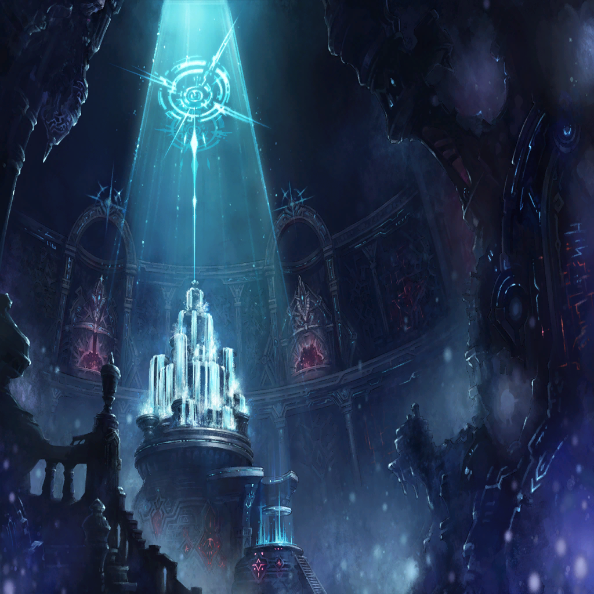
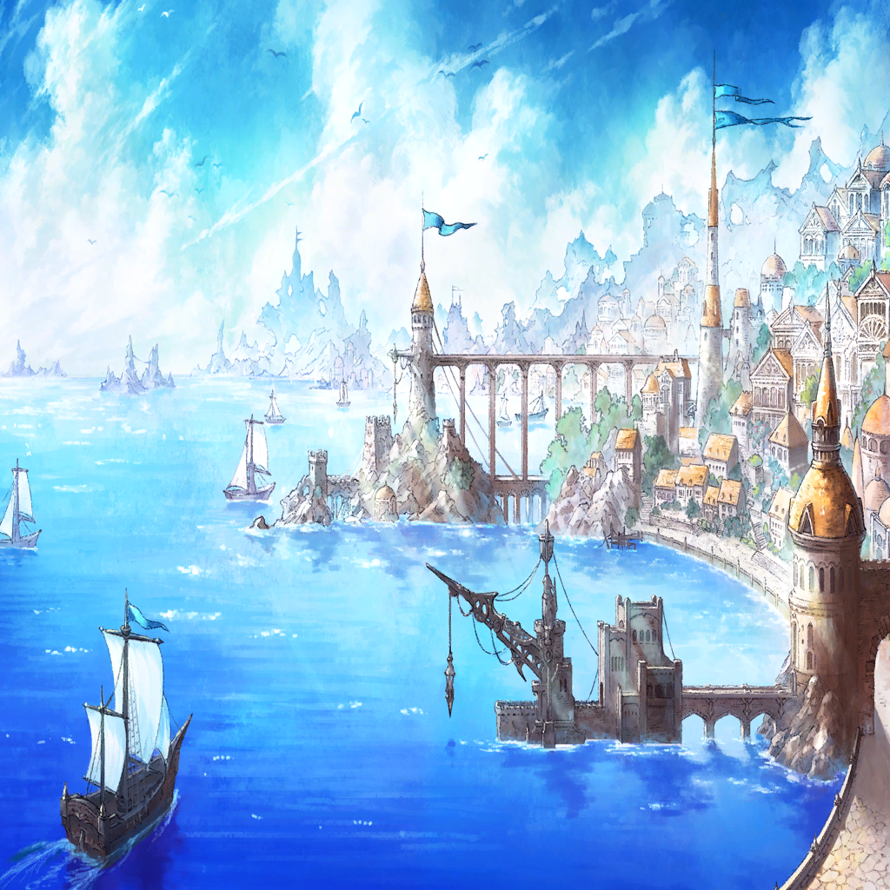

|
|  |
| ネロ・ビアンカ |
――観測、完了 |

ネロ |
あとは観測時の状態に戻すのみ
我らの存在を贄としてな |
ビアンカ |
エクスカリバーに起こった“力の消失”
その事実をこの“力”で――
“なかったことにする” |
| ネロ・ビアンカ |
時は、満ちた |
| ルナ |
…今まで、ありがとうございました |
ビアンカ |
寂しがらないで
私たちがいなくなっても
あなたの戦いは続いていく… |
ビアンカ |
そうでしょう？ |
| ルナ |
…はい、その通りです
努力の強さを、識らせなければ |
ビアンカ |
ええ、そうね |
ネロ |
我が消えればうぬとヴェーダの
繋がりも消える…それはうぬ自身が
消えるということと同義… |
ネロ |
構わぬのか？ |
アインツ |
…もう、追いついてくる者もいなくなった
ならばお前とともに消えるのも悪くはない |
ネロ |
…ああ、そうだな |
ビアンカ |
私たちの観測はここで終わる… |
ビアンカ |
“あなた”の観測の行方は
どうなるのかしらね |

ディオス |
…？ |
ビアンカ |
数奇な運命を持つあなた
その力になれるのもまた、数奇 |
ビアンカ |
どうか、あなたの望む未来を
掴み取れますように |
ディオス |
…ああ、必ず |
ディオス |
――！ |
ネロ |
さあ |
ビアンカ |
エクスカリバーを |
ディオス |
ああ…！ |
ディオス |
――――！ |
| ネロ・ビアンカ |
かつての“力”よ
今ここに―― |
|
|
ディオス |
…これが…真のエクスカリバー…？
…!? |
ディオス |
あなたたちは…！ |

カノン |
…そう。それが蘇ったエクスカリバー
…いいえ、貴方の想いを貫く為の、
新しいエクスカリバーの力なのね |

バシーニ |
認めよう、その意志を |
カノン |
認めよう、その絶対正義を |
バシーニ |
…それだけの想いと力があれば、
きっとできる |
カノン |
さあ、行ってあげて |
ディオス |
…あぁ、感謝する |
ディオス |
絶対正義の象徴よ
脈々と受け継がれし力を
取り戻すときは今 |
ディオス |
我は意志を示す
我は信念を示す
そして我は、道を示す |
ディオス |
悲しき世界を変える為に |
ディオス |
真の目覚めをここに
…聖剣エクスカリバーよ |
ディオス |
――今こそ、世界を導く光を |
| アガサ |
これが…エクスカリバーの真の輝き…！ |
カノン |
光が強くなればなるほど
闇はその深さを増す |
カノン |
光に救われる者もいれば、
闇に救われる者もまた存在する |
カノン |
――闇もまた、慈愛の形なれば |
ディオス |
ようやくここまで来ることができた |
カノン |
光であろうと |
バシーニ |
闇であろうと |
| カノン・バシーニ |
貫くべき信念がそこにあるのなら |
ディオス |
俺は―― |
 |
| ユフィ |
た――す――け―― |
ディオス |
ユフィ――！ |
|
|
ディオス |
――俺は！ |
ディオス |
もうあの時の無力な自分じゃない
それに何より―― |
 |
 |
|  |
|
ディオス |
――今は、ひとりじゃない |
ディオス |
…あの日の約束を果たしてみせる！ |
ディオス |
もう二度と…間違えない |
ディオス |
大事な家族を失わない為に！ |
| アガサ |
ディオス…！ |
ディオス |
信じて、預けてくれるか？ |
| アガサ |
…うん…！ |
ディオス |
見えた―― |
ディオス |
――すべては、この時の為に |
ディオス |
お前が背負う重荷は、
俺が代わりに背負ってみせる
だから、今… |
ディオス |
解き放つ |
ディオス |
ハアアアアアアアアッ!! |
|